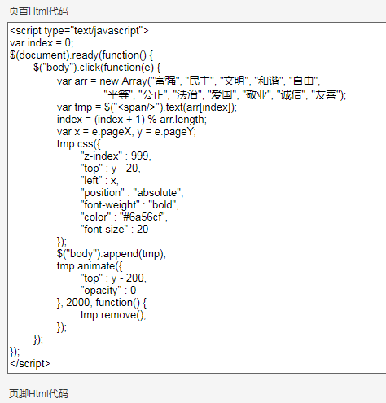

效果图，用的faststone--录像--togif，黄色圆圈实际是不显示的
博客后台管理设置

本地新建一个demo.html文件，可以自行测试，要引入jquery文件哦
来个“红橙黄绿蓝靛紫”的点击特效
<!DOCTYPE html>
<html>
<head>
<meta charset="UTF-8">
<script type="text/javascript" src="../js/jquery-1.9.1.js"></script>
<script type="text/javascript">
var index = 0; //全局索引
var colorIndex = 0;
$(document).ready(function() {
$("body").click(function(e) { //鼠标点击事件
var arr = new Array("富强", "民主", "文明", "和谐", "自由", "平等", "公正", "法治", "爱国", "敬业", "诚信", "友善");
var colorArr = new Array("red", "orange", "yellow", "green", "blue", "indigo", "purple");
var tmp = $("<span/>").text(arr[index]); //添加一个span标签显示arr数组对应的第一个索引内容
index = (index + 1) % arr.length; //取余,从0到arr数组长度，一直点击一直循环
var color = colorArr[colorIndex];
colorIndex = (colorIndex + 1) % colorArr.length;
var x = e.pageX, y = e.pageY; //鼠标点击的x,y点坐标
tmp.css({
"z-index" : 999, //堆叠顺序，越大越优先显示
"top" : y - 20, //y点坐标往上20像素
"left" : x, //x点坐标
"position" : "absolute", //绝对定位
"font-weight" : "bold", //加粗
"color" : color, //颜色
"font-size" : 20 //字体大小
});
$("body").append(tmp);
tmp.animate({ //自定义动画,样式--时间--功能
"top" : y - 200, //y点坐标往上200像素
"opacity" : 0 //饱和度,0即是透明了
}, 2000, function() { //2000毫秒
tmp.remove(); //消失
});
});
});
</script>
<title>Insert title here</title>
</head>
<body>
<div style="width:1000px;height:1000px"></div>
</body>
</html>